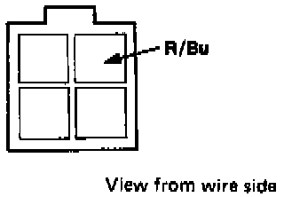
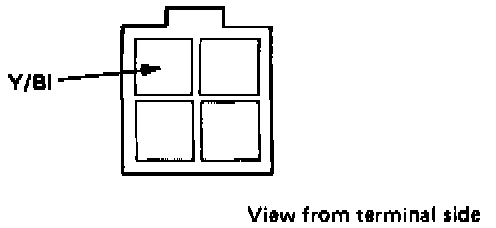
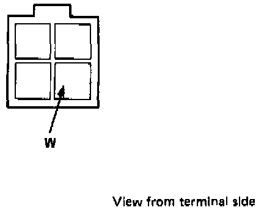
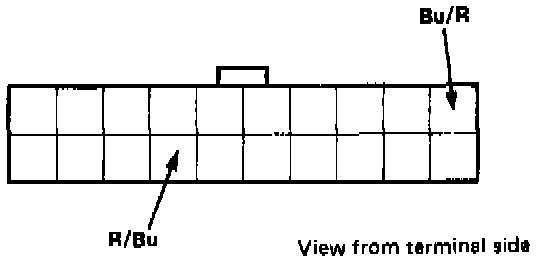

Compressor Clutch Does Not Come on (But Fans Do)
COMPRESSOR CLUTCH DOES NOT COME ON (BUT FANS DO)NOTE: First, switch relays between the clutch and condenser fan timer to see if the relay is faulty.

1. Connect the R/Bu terminal at the clutch relay to ground.
With the ignition ON, the compressor clutch should engage.
- If it does not, go to the next step.
- If it does, go to step 4.

2. Disconnect the clutch relay connector and check the Y/Bl terminal voltage.
With the ignition ON, there should be battery voltage.
- If there is, go to the next step.
- If not, there is an open in the Y/Bl wire.

3. Check the W terminal voltage at the clutch relay connector.
There should be battery voltage.
- If there is, go to the next step.
- If not, there is an open in the W wire.

4. Disconnect the PGM-FI ECU 20-P connector, then connect the R/Bu terminal to ground.
With the ignition ON, the compressor should start.
- If the compressor does not start, there is an open in the R/Bu wire between the PGM-FI ECU and clutch relay.
- If the compressor starts, check the voltage at Bu/R terminal. The voltage should be about 10V with the A/C switch OFF, and about 0V with the A/C switch ON.
- If the voltage is as specified above, PGM-FI ECU is faulty.
- If the voltage is not as specified, the Bu/R wire between the ECU and the cooling fan control unit is open or shorted or the control unit is faulty.